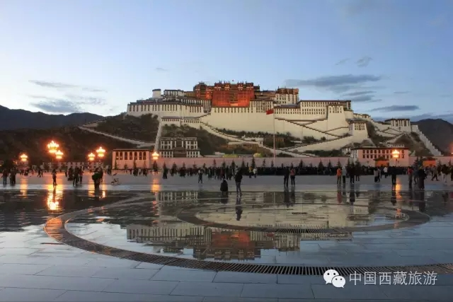
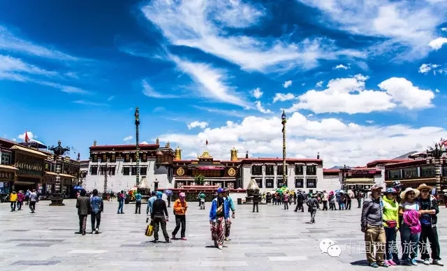
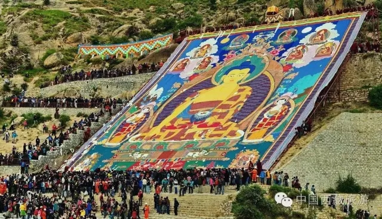

西藏商报

近年来，西藏的旅游业的发展非常迅速，这取决于西藏得天独厚的优势，除了壮美的自然风光，还有它特有的历史文化和传统的民俗文化的底蕴。在西藏旅游快速发展的过程中，取得了可喜的成绩，但也产生了一些遗憾。为推动西藏加快建设重要的世界旅游目的地和重要的中华民族特色文化保护地的目标，“旅游服务标准化与产业提升”被带上第三届藏博会旅游分论坛议程。
围绕“旅游服务标准化与产业提升”，第三届藏博会旅游分论坛紧密结合西藏旅游服务标准化建设年总体目标和取得的成效，按照“大旅游、大产业、大发展”的要求，突出西藏民族文化和区域特色，着力提升旅游服务标准化水平，引领西藏旅游业转型升级。国内外知名旅游专家学者纷纷就这一话题为西藏旅游的科学发展建言献策。
自治区旅发委相关负责人：
三年内做好标准化建设

要将西藏打造成为中要的世界旅游目的地，西藏旅游将做到以下几点：今年是旅游服务标准化建设年，年底自治区旅发委将集中制定出台旅行社、导游、酒店、车船、餐饮五个方面的地方标准，配套形成相应的管理办法、考核办法、奖励机制，在规范市场秩序、引领行业发展、促进公平正义的同时，更加注重产业转型升级、提质增效，加速与其他经济产业深度融合，协调拉动扶贫产业，增加群众生产效益，共同维护我区经济持续健康发展良好态势，确保到2020年我区与全国其他省市一道迈入小康社会。
明年，将是我区旅游服务标准化提高年，要重点抓好各行各业、各级各层的法律法规、标准规范、业务技能培训，分批、分次不断提升旅游从业人员法律意识、规矩意识和敬畏之心；将精力聚焦到质量与服务，着力与公安、消防、交通、质监、食药等部门建立长效综合执法检查机制，每年开展突击执法大检查1-2次，力争形成科学、长期、有效的监管方式，引领我区旅游新一轮质量变革。
另外，要树立“创新、协调、绿色、开放、共享”的发展理念，推动和实施我区旅游服务标准体系。后年，将是我区旅游服务标准化巩固年，在充分总结工作经验、吸收成功做法的基础上，不断补充完善、拓展创新，进一步优化、细化标准体系，让旅游服务更加有章可循、有法可依、有据可查，持续释放旅游生机与互动，推动西藏旅游向高质量、优服务更高维度转变，不断增强提升西藏旅游世界影响力和知名度。
西藏大学经济与管理学院教授久毛措：
旅游要抓住“一带一路”机遇

随着西藏旅游业的迅速发展，旅游业发展过程中也出现了一些问题，而旅游标准化建设可以全面规范和整合西藏的旅游资源，在市场竞争中让旅游产业优胜劣汰。如果没有标准化的建设，可能会影响世界旅游目的地的打造，也会影响西藏的旅游走出去。让西藏的旅游融入中国，融入世界，旅游标准化的建设是必须要做的。
除了得天独厚的地域优势和历史文化背景，西藏旅游发展另外一个优势就是国家提出了“一带一路”战略，在这个战略的指引下，西藏要打造成面向南亚开放的通道，对于西藏旅游的发展是一个很大的契机，也是非常好的机遇，而西藏如何抓住这个机遇，把西藏的旅游品牌打造得更完美，真正实现实际重要的旅游目的地，其重要体现就是自治区政府将2016年设立为西藏旅游服务标准化建设年。旅游标准化的建设对于西藏旅游发展的规范化、效益化、品质化的建设都有非常重要的推动作用。
西藏旅行社协会会长、西藏旅游总公司总经理黄利华：
让旅游服务标准化植根于每一家旅行社
作为西藏的旅行社协会，我们深感责任重大，使命光荣，时刻以“强化旅游企业和从业人员质量意识，全面提升旅游服务质量，树立旅游行业良好形象，促进旅游业又好又快发展”为己任，以深入开展“2016旅游服务标准化建设年”为契机，建立协会网站和微信群，开辟“会员专区”，增设“旅游服务质量标准化建设专栏”，建立市场分析、行业自律与管理、舆情收集、经验交流和监督等沟通平台，结合西藏实际，相继出台“旅行社服务质量管理制度”、“旅行社星级评定与管理”等。同时，通过组织活动、开展交流，进一步加强自身建设、着力提倡人性化、个性化服务，积极主动地采取科学有效的指导，让旅游服务标准化根植于每一家旅行社。以“提质增效、优质安全、诚信义明、特色精品”为目标，为西藏旅游战略支柱产业的腾飞注入新活力，充分发挥旅行社协会桥梁作用，推动西藏旅游业标准化建设，为把西藏打造为重要的世界旅游目的地做出积极贡献。